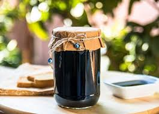
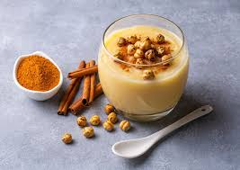
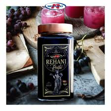

Pekmezi njihet si ilaçi që lufton të ftohtin dhe gripin. Kur piqet mani, shkundet dhe mblidhet. Manat i hedhim në një kazan të madh dhe i ziejmë mirë. Mund të merrni çfarëdo mani, të bardhë, të kuq, apo të zi. Pasi zihen, hidhen në një kanistër me napë dhe shtypen. Pekmezi i manit ka një veti për rritjen e qelizave të kuqe të gjakut. Mjekët sugjerojnë që ta hanë ata njerëz që vuajnë nga dhimbjet e stomakut dhe dihet që ai ka një efekt qetësues për njerëzit që vuajnë nga astma dhe bronkiti. Ndërsa pekmezi i manit rrit nxehtësinë e trupit, ai ka një efekt shërues te njerëzit që vuajnë nga ftohja dhe gripi. Fëmijëve gjithashtu u këshillohet të konsumojnë 1 lugë gjelle pekmez të manit dy herë në ditë pasi ndihmon hormonet e rritjes. Pekmezi i manit të zi, është i mirë për ata që vuajnë nga ulcera dhe dhimbjet në gjoks. Gjithashtu është i mirë për trajtimin e infeksionit urinar. Falë vitaminës dhe përmbajtjes së lartë të mineraleve, ky lloj pekmezi është i mirë për kockat, dhëmbët dhe mishrat e dhëmbëve. Për më tepër, nënat që ushqejnë fëmijët me gji këshillohen të hanë pekmez nga mani i zi pasi thuhet se rrit prodhimin e qumështit. Per te pare produktet tona kliko ketu.
Boza është një pije disi e trashë, me një përmbajtje të ulët alkooli (rreth 1%) dhe shije disi të thartë. Në Shqipëri prodhohet nga mielli i misrit e i grurit. Boza ka katër përbërës kryesorë: miell misri e gruri, sheqer dhe ujë. Pas prodhimit, boza duhet të ruhet në një temperaturë prej 2-3 °C, temperaturë në të cilën boza mund të ruhet për rreth një muaj , por nuk duhet të lihet të ngrihet pasi ngrirja sjell ndarjen e ujin nga lënda e thatë. Boza ka disa dobi për shëndetin siç janë: normalizimi i tensionit të gjakut, rritja e prodhimit te qumështit tek gratë që sapo kanë lindur dhe kanë fëmijë në gji, dhe ndihmon në tretjen e ushqimit në stomak. Eshtë një ushqim i vlefshëm për njerëzit që merren me aktivitete fizike pasi përmban vitamina A, C, E, dhe katër lloje B. Per te pare produktet tona kliko ketu.
Rehani është një pije tradicionale e krahinës së Skraparit. Ajo bëhet me thana, kumbulla të egra, dhe rrush. Për rehani, rrushi nuk duhet shumë i ëmbël, por të jetë i pjekur mirë. Pasi e kemi vjelë rrushin, e lemë nëpër arka gjithë natën. Ditën tjetër, e hedhim ca nga ca, në një govatë, ose kazan, dhe e shypim me këmbë me një palë çizme të reja. Përbersitë i hedhim për raki, dhe mushtin (lëngun) e marim për rehani. E kullojmë mushtin në sitë deri në 3-4 herë, derisa të mos ketë llumb. Pastaj e vendosim në zjarr, dhe duke e zjerë i heqim shkumën, (por kujdes, duhet ta trazoni dhe ta ruani se buçet, derdhet). Kur të fillojë të trashet, e trazojmë pak më shpesh, që të mos zhezhitet, dhe po u bë sumbull, e heqim nga zjarri, e lemë të ftohet. E mbushim në shishe qelqi, ose bidona plastik, dhe e ruajmë për shumë kohë. Rehania e rrushit nuk ka nevojë për sheqer, hedhim 2-3 lugë gjelle në një gotë me ujë. Per te pare produktet tona kliko ketu.
